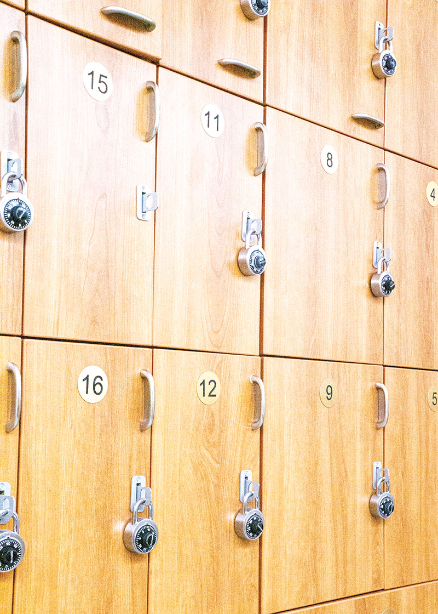

This image focuses on an EXIT sign as the main subject. I used a horizontal crop to emphasize direction and placement, creating a strong focal point. The composition highlights contrast between light and dark areas, and tonal adjustments enhance the brightness of the red text while deepening shadows for a more dramatic effect.

This image features a pattern of lockers, emphasizing repetition and structure. I used a vertical crop to highlight symmetry and variation in locker numbers and locks. The tonal adjustments were subtle to preserve the natural texture while improving contrast and clarity.